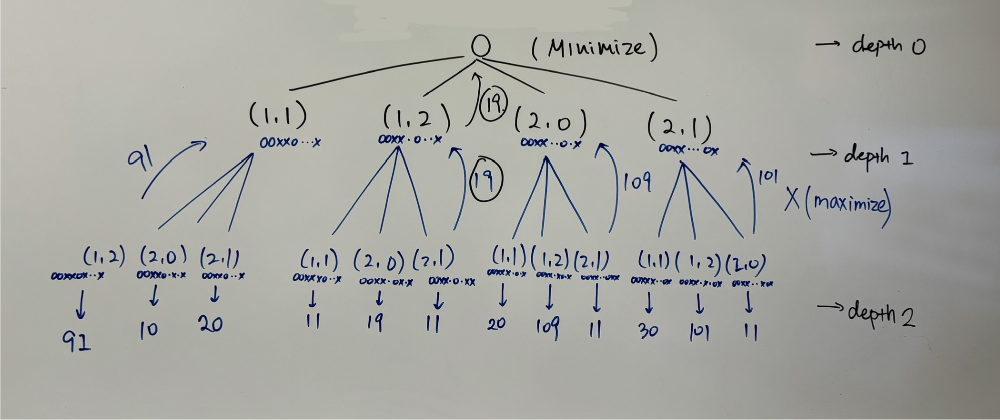

| Learning Diary Entry | ||||||||||||||||||||||||||||||||
| Introduction to Artificial Intelligence | ||||||||||||||||||||||||||||||||
|
Purpose:
This document serves as both your Learning Diary entry and your
written report for the K-in-a-Row assignment. Submit it as
Copy this template into your own file. After each heading and its instruction paragraph, write your response in a visually distinct way (different font, color, or indentation). Aim for honest, specific answers rather than length. Where a question asks you to trace through code or show a calculation, actually do so — do not describe it in the abstract. Point values (60 pts total for this document): Secs 1+2: 3 • Sec 3: 3 • Sec 4: 14 • Sec 5: 10 • Sec 6: 10 • Sec 7: 4 • Sec 8: 1 • Sec 9: 4 • Sec 10: 1 • Transcript (items 4.10–4.11): 10. Suggested sub-weights appear in each section heading. Note on gen-AI use: This assignment permits gen-AI assistance. The questions in Sections 4 and 5 are designed to require engagement with your specific submitted code and your specific game runs. They cannot be answered by prompting an AI with the assignment description alone. | ||||||||||||||||||||||||||||||||
|
Basic Information Student name(s): Ham, Nicole; Rena Yin Student ID(s): 2301417; 2339469 Agent name: Game-type focus: Five-in-a-Row with forbidden corners Submission date: 10/29/2026 | ||||||||||||||||||||||||||||||||
|
Section 1 — Goals (3 pts, with Section 2) Describe what you set out to build at the start of the assignment. What were your intentions for the agent's persona — its name, tone, character? What level of search capability (minimax depth, alpha-beta, optional extras) did you aim for? If you worked with a partner, briefly note how you divided the work. For agent persona, we aim for a ‘RageBaiting’ type just to irritate the opponents. For searching capability, we built minimax with alpha-beta pruning, plus a time limit with iterative deepening, and Zobrist hashing for extra credit. We didn’t choose to bring in an LLM in the current stage, maybe it could be possible in the future. Currently we are doing search stats for the dialogue. Work split: Rena - minimax, introduce, make_move, persona tune and dialogue, zobrist hashing. Nicole - static_eval, prepare, timing improvement, implemented features for “Tell me how you did that” and “What's your take on the game so far?”, searched for LLM plugin related stuff. | ||||||||||||||||||||||||||||||||
|
Section 2 — Agent Profile (3 pts, with Section 1)
2a. Agent identity
Give the agent's name and a 2–3 line description of its persona:
tone, character, and any thematic inspiration (fictional character,
historical figure, invented archetype, etc.).
Our agent is Smirk the Insufferable, who is an overconfident player that provides sarcastic commentary as it plays the game. The tone for this character is smug and purposefully tries to make comments that would bait the player into raging and responding back. It also exaggerates its confidence by joking about its search process and commenting at the board.
2b. Twin
How does the twin instance (OurAgent(twin=True)) differ from the
base agent? Describe at least one behavioral or persona difference,
and explain why you chose that particular variation. (The twin's
purpose is to enable self-play tests where both sides do not make
identical moves; even a small difference in opening preference or
persona name achieves this.)
Our twin is called Smirk the Passive-Aggressive, who goes by the nickname Smirk Jr. This twin adds extra fake politeness phrases like “No offense!” and “But you’re doing great, really” and has a different introduction. For the twin agent, the search ability is identical and dialogues are picked randomly.
2c. Game-type coverage
Which game type(s) did you test your agent against most thoroughly,
and which did you test least? Any known weaknesses on a particular
board size or k value?
We tested on all 3 games: five in a row, cassini, and tic-tac-toc. We test most thoroughly on Five in a row, since that’s the most transcript game. We ran fully games against RandomPlayer and against our own twin player at time limits 0.05 to 3 seconds per move, and used it for our zobrist hashing benchmarks. Cassini got basically the same as above. For Tic-tac-toe we mainly tested through the autograder. The main know weakness is depth on the larger boards. At 0.5 to 1 second per move, the agent only reaches about 3 ply in a Five in a row game. Which should be enough for blocking immediate threats, but not to plan multi-move attacks. | ||||||||||||||||||||||||||||||||
|
Section 3 — Development & Activities (3 pts)
Describe the phases of your work on this assignment, in roughly
chronological order. Key areas to address:
- How did you approach writing the move generator and the minimax
skeleton before adding alpha-beta?
- What order did you tackle the main components in, and why?
- How did you develop the agent's dialog capability? If you went
through an iterative design process (e.g., scripted rules first,
then LLM integration), describe each phase and what you learned
from it. What worked? What did you discard?
- What resources (lecture notes, readings, outside references)
were most useful?
I wrote the move generator and minimax skeleton first, which follows the numbered steps shown as pseudocode. The generator ‘successors_and_moves’ yields each move with a deep-copied successor rate. Minimax recurs with X maximizing and O minimizing. Once plain minimax passed the count test, I added the alpha-beta cutoff checks, that passed the second count test. The order that we tackled the main components is that we first established the move generator and the minimax search framework. We then reviewed the state representation successor generation, and the search data flow. After that, we implemented prepare to save the game configuration and developed static_eval so the search can distinguish good moves. We then refined time management through iterative deepening, fallbacks, and deadline checks so that it can preserve the last completed search result. After we verified that the base was done, we then expanded to other extra credit opportunities like implementing a feature where the agent responds to “Tell me how you did that”, “What's your take on the game so far?”, and Zobrist hashing. As for the dialog development, Rena first established Smirk’s persona and rule-based dialogue based on opponent keywords and the state of the board. AI assistance was used to help make the computation explanations accurate and explains the move of what it saw, and also refined the wording to preserve the persona without inventing statistics or outcomes. We considered integrating Gemini, but decided against it because we wanted to avoid the credential and dependency concerns. The assignment specification and the starter files were useful for references for how we should implement interfaces, modes, and present our deliverables. The lecture Adversarial Search I and Adversarial Search II helped how we implement the weighted unblocked line approach, alpha-beta bounds, and cutoff conditions. AI was also used to explain certain aspects that were confusing and walked through the code on parts that we didn’t understand. | ||||||||||||||||||||||||||||||||
|
Section 4 — Search Algorithm Analysis (14 pts: ~3 implementation, ~3 measurement, ~4 correctness explanation, ~4 hand-trace) This section asks you to explain and demonstrate your understanding of the search algorithms you implemented. Answers must refer to your specific code and your specific test results — generic descriptions of how minimax works in textbooks are not sufficient.
4a. Implementation overview
In which function(s) do alpha-beta cutoffs get detected in your
code? Briefly describe the data flow: how does a cutoff in a
deep recursive call propagate back to stop exploration of siblings?
Cutoffs are detected inside the minimax method, right after each child’s value is backed up. At a max node (X to move), the search stops when best_val >= beta. At a min node (O), it stops when best_val <= alpha. Otherwise, the node narrows its own window, alpha = max(alpha, best_value) at a max node or beta = min(beta, best_value) at a min node. On a cutoff, the loop over children breaks. Our generator builds children very lazy, so the remaining siblings are never even created. Alpha and Beta are passed down as arguments to each recursive call, so every node searches inside the window inherited from its ancestors. When a deep node cuts off, it returns early with a value outside its parent window. The parent then compares them with the bound, and may cut it off in turn.
4b. Effectiveness measurement
Run your agent on at least one game (or on the autograder test
state) with alpha-beta ON vs. OFF, at the same search depth
(depth 3 or more). Report the number of static evaluations in
each case. How many evaluations does alpha-beta save, and what
is the percentage reduction?
We compared our agent with alpha-beta pruning enabled and disabled on autograder.MM_TEST_STATE, with O to move. Zobrist hashing was disabled and no time limit was applied. In our code,
4c. Conceptual question — correctness of pruning
Explain in your own words why alpha-beta pruning is *correct*:
that is, why can we safely prune a subtree without risking that
we miss the optimal move? Your answer should be specific enough
that it could not have been written without understanding the
algorithm — for example, identify what invariant about alpha and
beta values makes the cutoff safe.
Alpha is the value the maximizer is already guaranteed by some alternative higher up on the current path. Beta is the same guarantee for the minimizer. Together they hold an invariant: any node whose value falls outside the window alpha beta cannot be reached by optimal play, because one of the two players already has a better option elsewhere and would never choose the path leading to it.
4d. Minimax trace (do this by hand)
Using the autograder test state (reproduced below for convenience),
draw or describe the complete minimax tree to depth 2. Label each
leaf with the value your static_eval (or the special evaluator)
assigns. Show how the backed-up values propagate to the root,
and identify the move your agent selects.
Test state (it is O's turn):
O | O | X
X | |
| | X
Blank squares in row-major order: (1,1), (1,2), (2,0), (2,1).
Expected best move: (1,2). Plain-minimax leaf count: 12.
 In the image, we traced the tree to a depth of 2. For O turn, we pick the minimizing value from (91, 19, 109, 101); for X turn, we pick the maximizing value from (91, 10, 20, 11, 19, 11, 20, 109, 11, 30, 101, 11). | ||||||||||||||||||||||||||||||||
|
Section 5 — Static Evaluation Analysis (10 pts: ~4 feature design, ~4 concrete example, ~2 limitations)
5a. Feature design
What features does your static_eval function use to score a board?
(Examples: counts of X's and O's in rows/columns/diagonals,
weighted partial lines, winning-threat detection, forbidden-square
awareness.) Explain the intuition behind the scoring formula.
Our For each eligible segment, our code counts its X and O tokens using If
5b. Concrete example
Identify a specific board state that your agent actually encountered
during a test game (not a constructed example — use a state from a
real run). Write out or sketch the board, state whose turn it is,
and report the numerical score your static_eval returned for it.
Then justify that score: why is it the right value for that
position given your scoring logic?
A specific board state that my agent actually encountered is Smirk’s eleventh game move, where Smirk places X at (2, 1) in a game match against Michael. This was the following board: 0 1 2 3 4 5 6 +---------------+ 0 | - . . . . . - | 1 | . . . O O . . | 2 | . X X X X O . | 3 | . . X X O . . | 4 | . . . O . . . | 5 | . . . . . . . | 6 | - . . . . . - | +---------------+
Therefore score = 3 + 50 + 1000 - 6 - 30 - 200 = 817 The largest contribution comes from row 2, where the row consists of
5c. Limitations
Describe at least one type of board position where your static_eval
is likely to give a misleading score, and explain why.
Using the board above, this board position is also an example of when static_eval is likely to give a misleading score. Our evaluator returns a deceivingly high number for the row | ||||||||||||||||||||||||||||||||
|
Section 6 — Dialog & Persona Design (10 pts: ~3 game-state relevance, ~3 opponent responsiveness, ~2 persona consistency, ~2 approach/tools)
6a. Game-state relevance
What features, if any, does your agent use to make its utterances
relevant to the current board position or game trajectory?
(Examples: commenting on the number of pieces on the board,
recognizing a near-win situation, noting the opponent's last move.)
Explain how these features work at the code level.
Our
6b. Opponent responsiveness
What features, if any, does your agent use to respond to or
acknowledge the opponent's remarks? Explain how they work.
The agent’s respond_to method checks the opponent’s remark by converting the response to lower case and comparing it to a bank of keywords. It contains 15 keywords grouped into 6 categories (luck, compliments, apologies, winning, losing, and randomness). It selects a response category, and
6c. Persona consistency
Give two or three example utterances that your agent might produce,
and explain what makes them "in character" for the persona you
designed.
Smirk is a character that wants to take credit for beating the opponent, so it replies with something like "Nice try. Did you really think I wouldn't see that?", "Blocked. Write that down.", and "Denied. Next." From a real game against RandomPlayer, Randy would say "I hope this is my lucky day!" and to that Smirk answered "That was math, not fortune. I'm not saying you're losing, but the scoreboard is." This kind of dialogue exaggerates Smirk’s confident and competitive personality.
6d. Approach and tools
Describe the method you used to generate utterances: hand-coded
rules, an LLM API, search-instrumented commentary, or a
combination. If you used an LLM, briefly describe your prompting
strategy and what persona/tone instructions you gave it.
We hand-coded the rules for the agent to generate the utterances. The conditional checks are there to select the categories based on events, search scores, and remarks. We considered using an LLM API, but decided against it to avoid the headache with API keys and network issues. In the competition mode where utterances_matter is set to false, it will return ‘OK’. | ||||||||||||||||||||||||||||||||
|
Section 7 — Challenges & Solutions (4 pts)
Describe points of difficulty you encountered and how you resolved
them (or where you remain stuck). Include at least one concrete
example of a bug: what the symptom was, what the root cause turned
out to be, and what the fix was. Examples of issues students
commonly hit on this assignment:
- Off-by-one errors in depth-remaining logic
- Returning the original state instead of a deep copy
- Alpha-beta cutoff conditions inverted (pruning too aggressively
or not at all)
- static_eval returning 0 for all states in a particular game type
- prepare not returning 'OK', causing autograder failures
One difficulty that occurred was the dialog feedback loop. In the self-play, both agents both said "Losing? Finally, something we agree on" for about 40 moves stright. The reply lines that contained the keyword “losing” would trigger a constant cycle and would influence the other agent to say the phrase again as well. We fixed it by setting reply lines to no longer contain trigger words or “?”, and the same reply can’t be used twice in a row. Another challenge was making the computation explanations accurate. When testing the agent, it described the search as “minimax with alpha-beta and iterative deepening” even when pruning was disabled or the AUTOGRADER mode only performed one fixed depth search. The cause was that the text was hardcoded, so to fix this we recorded the actual search and selecting the keywords from those settings (including the depth, evaluation calls, cutoff events, elapsed time) and displaying that. We also encountered a bug where after the timed search ended for minimax, a later call to the function would immediately raise | ||||||||||||||||||||||||||||||||
|
Section 8 — Reflections & Learnings (1 pt)
Articulate what you now understand more clearly as a result of doing
this assignment. Some prompts to consider:
- Did implementing minimax change how you think about game-tree
search? Is there anything that surprised you about how it behaves?
- What is one connection you made between the material in this
assignment and something else from the course or from outside it?
- If you were to explain alpha-beta pruning to a classmate who
had not yet implemented it, what is the single most important
thing you would tell them?
Implementing minimax is a good practice and also make me get more familiar with this type of ‘zero sum game’ algorithm. With some pro algorithms built on top of this, such as alpha beta pruning, it really does save a lot of time for game play. In 4b, when we are drawing out the tree, we get further practice on enumerating all possible states and pick up the most optimal choice for each possible step. If we are explaining alpha-beta pruning to someone new, we will tell them to pay attention to the bounds since you need to realize the min and max in every deepening level. I also developed a clearer understanding between evaluating a position and searching for a move, where | ||||||||||||||||||||||||||||||||
|
Section 9 — Gen-AI Use & Attribution (4 pts)
9a. Tools used
List the AI tools you used on this assignment (e.g., Claude Code,
ChatGPT, GitHub Copilot, Gemini). If you used none, say so.
Claude Opus 5.5., ChatGPT 6.1-Sol
9b. Authorship map
For each major component below, indicate whether it was
(A) written entirely by you, (B) substantially AI-generated
and then reviewed/edited by you, or (C) AI-generated and
used largely as produced. Add a brief note if the reality
is more nuanced than A/B/C.
- Move generator
- minimax skeleton (recursion structure, base cases)
- Alpha-beta cutoff logic
- static_eval function body
- Utterance generation
- prepare / introduce methods
- Any extra-credit components
9c. What the AI got wrong
Describe at least one case where gen-AI produced code or an
explanation that was incorrect or misleading, and what you had
to do to recognize and fix it. (If the AI was entirely correct
throughout, describe the closest call — a suggestion that
required the most careful scrutiny before you accepted it.)
Something that AI got wong was the implementation of the dialogue, where it got stuck into a feedback loop bug as described above. Another issue that we noticed was that it would only take the first 6 words from the opponent’s quote instead of the full quote, making it sound incomplete. By running the game against another opponent, we were able to fix this issue to make Smirk’s remark sound more natural.
9d. One surprising insight from prompting
Describe one thing you learned or noticed about AI-assisted
coding that surprised you — about the AI's behavior, your own
process, or the assignment material itself.
I noticed that AI can handle this type of assignment in a very good way, especially when you listed out the implementation steps, it will follow it entirely without any error.
9e. Prompt log (For the Record)
Provide either the full prompting conversation for your
AI-assisted coding on this assignment (if not longer than 50K
bytes) or just your own prompts if the full conversation is
longer. Do not include code or plan files written to your
file system by the agent. If your prompts involve prompting
files (e.g., CLAUDE.md), include them if short (under 5K bytes
each); otherwise describe what they contain.
This section should not exceed 100K bytes in total.
| ||||||||||||||||||||||||||||||||
|
Section 10 — Next Steps (1 pt) Identify remaining uncertainties or open questions about the material. What would you explore or improve if you had more time? What would you do differently if you were starting this assignment over today? If we have more time, we would explore the LLM API for demo mode, and use the rule based dialogue as a fallback. An open question would be if it can produce more varied responses within the move so that it can enhance Smirk’s persona. If we were to start again, we would probably establish clearer guidelines on the search, timing, and dialogue together to make integration and testing easier rather than having merge conflicts since we were working with version control. | ||||||||||||||||||||||||||||||||
|
Section 11 — Extra Credit (if applicable) (bonus pts — see spec)
For each extra credit option you completed, include a separate
subsection with:
- The option label (e.g., "Part I-A: Child ordering by static eval")
- A brief description of how you implemented it
- Measurement results (e.g., static evals saved at depth 4 with
vs. without ordering; Zobrist hit/miss rates; sample LLM-generated
utterances with prompts)
- What you learned from the implementation
If you did not complete any extra credit options, omit this section.
Part I-B: Zobrist hashing implement Zobrist hashing. I went over the concept then tell Calude what to follow for writing the code out. Measurement results: about 50–57% of lookups hit in timed games. I learned to cooperate with AI agents and reviewed on the XOR bitwise calculation when doing zobrist hashing. Part 2-B: “Tell me how you did that” This was implemented by preserving the move’s statistics in
From this implementation, we learned to distinguish completed depth from total search work and evaluation calls from unique positions. Part 2-C: "What's your take on the game so far?" The agent uses recorded moves, copied board states, and past dialogue exchanged to make a narrative. It identifies an opening, winning opportunities, and blocked lines.
For us, a meaningful narrative should mention the game’s action and the conversation history instead of listing evaluation scores. We also Learned to distinguish events and predictions, where a favorable search score doesn’t necessarily mean a gauranteed win. | ||||||||||||||||||||||||||||||||
| Learning Diary Entry — K-in-a-Row Assignment | ||||||||||||||||||||||||||||||||